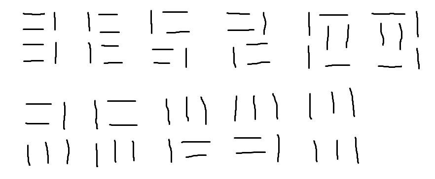

Tutorials
ENDIANS
DRAWRECT
-HINT : 각 점의 위치를 비교해서 찾아낸다.
-코드 : ① 1차원 배열 이용, ② 2차원 배열 이용
-코드 : ① 1차원 배열 이용, ② 2차원 배열 이용
CONVERT
-Round 방법
- Math.round()// Round
- string.format()// Round
- System.out.println("%.4f", 33.333333);// Not Round
- DecimalFormat// Not Round
-단위를 구할 때, 나눗셈이 아닌 곱셈을 이용해야 한다.
URI
-풀이법
- URLDecoder 이용 (import java.net.URLDecoder;)
- Map 이용
- String 배열 또는 Switch문 사용
XHAENEUNG
-풀이법
- Map
nextLine()으로 입력 값 한 번에 받은 후 split() 이용하여 분할
switch 또는 if 문(string.equals()) 이용,
결과값을 Arrays.sort() 를 사용하여 정렬시킨 후, 해당 값을 비교해 integer형 숫자로 변환 - map 이용
next() 로 일일이 입력 값을 나눔
switch 또는 if 문(string.equals()) 이용
결과값을 각각 char로 분리해서 모두 더해 integer로 저장 후 비교 후 integer형 숫자로 변환
WEIRD
-풀이법
- 약수의 개수가 가변적이므로 ArrayList를 썼다.
제일 큰 약수부터 더하면서 n값보다 큰 index가 나오면 해당 index를 건너 뛰고 더하는 방식을 사용했다.
(모든 Weird 수를 대입해본 결과, 모두 정답으로 나왔다. 하지만 뭔가 찝찝한 건 왜지... -_-;)
※ Weird number : http://en.wikipedia.org/wiki/Weird_number
HAMMINGCODE
-풀이법
- check bit를 검사할 때, if문으로 하지 않고 비트 연산자를 쓴다. ( if문으로 처리했었던 멍청한 나를 반성해 본다. )
- 숫자를 문자로 읽어들일 때, 해당 숫자 문자에 대한 코드 ( 예 : '0' )를 해당 char 숫자에서 빼주면 실제 숫자가 나온다.
SHISENSHO
Output Test
1
5 10
..........
.a..x..yb.
.a..c.b...
.a..y.c.b.
..........
BRACKETS2
풀이법
- 스택사용
- 가능한 모든 경우의 수를 대입 ( 예 : Open Brackets 또는 close Brackets만 있는 경우, 홀수로 끝나는 Bracket 등... )
FIXPAREN
Bracket2와 달리 모든 입력은 정상이라고 가정하므로 예외처리없이 풀면 된다.
NQUEEN
풀이법
- BackTracking 기법
체스판을 2차원 배열로 만들어 풀었지만 시간초과가 떴다. 결국 구글링의 힘으로 BackTracking 기법을 사용한다는 것을 알아내고 풀 수 있었다. 다시 한 번 천재들의 알고리즘 기법에 경탄할 수 있는 순간이였다. 머리가 좋지 못한 내 자신을 발견할 수 있는 좋은 시간이었다. T_T
CLOCKSYNC
풀이법
- 한 개의 스위치로만 동작하는 시계를 찾아 12시로 설정해 나가는 작업을 계속 해나가면 된다.
- 완전 탐색을 사용하여 모든 입력에 대해 시계를 일일이 12시로 맞춰나간다.
TSP1
대입해본 값
ptrArr[0] = 0
ptrArr[0] = 1ptrArr[1] = 0ptrArr[2] = 0
ptrArr[2] = 1
ptrArr[2] = 2ptrArr[3] = 3⇒distMap[1][0], distMap[0][2], distMap[2][3]
ptrArr[2] = 3ptrArr[3] = 2⇒distMap[1][0], distMap[0][3], distMap[3][2]
ptrArr[1] = 1
ptrArr[1] = 2
ptrArr[1] = 3
ptrArr[0] = 2
ptrArr[0] = 3
BOARDCOVER
풀이법
- 한 점 (x,y) 을 지정하고 그 점에서 들어갈 수 있는 블록의 모든 모양을 넣는다. ( +, ㄱ, ㄱ반대모양)
빈 칸이 없을 때까지 반복문으로 돌려주면 된다.
DIAMONDPATH
LIS
GRID
문제 이해만 해도 하루가 걸렸던... -_-;;
2x1 도미노 블록을 4xN 의 사각형 안에 꽉 채워야 한다.
4xN 사각형을 만들어 구현시켰으나 규칙을 이용한 점화식을 세우면 훨씬 간결하다.
-점화식 코드

4x3 사각형 일 때, 가능한 경우의 수.
QUANTIZE
평균과 분산을 이용해서 모든 경우의 수를 구해주면 된다.